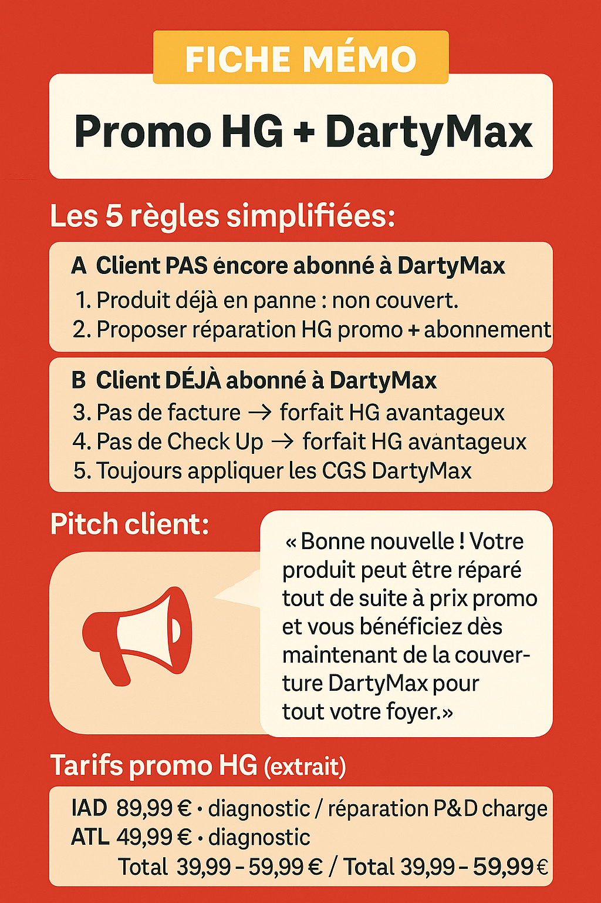
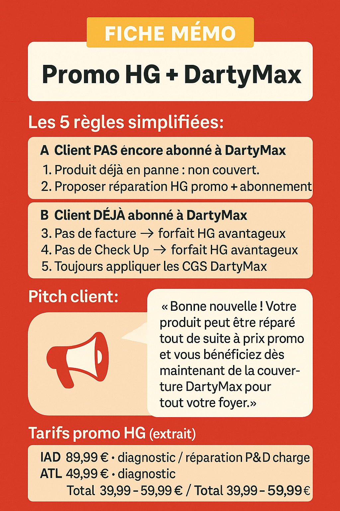

📝 Fiche mémo 1 page
Les 5 règles, le pitch client et les tarifs promo en un coup d’œil.
 Télécharger l’imageTout est prêt pour performer dès aujourd’hui
🛠️ Scripts, fiches mémo et check-lists : tout est prêt pour être rapides, clairs et efficaces dès aujourd’hui. Utilisez-les sans modération !
Les 5 règles, le pitch client et les tarifs promo en un coup d’œil.
 Télécharger l’imageRéponses clés aux « c’est trop cher » ou « je n’ai pas la facture ».
Télécharger PDFÉtapes obligatoires pour chaque produit déjà en panne.
 Télécharger l’image
Télécharger l’image
Suivez votre taux de conversion HG → DartyMax et vos primes ; le reporting est
envoyé chaque semaine.
Rapprochez-vous de votre manager pour accéder au détail.